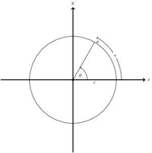

Chapter 14.1
14.1
14.1-1
To see how OS-SELECT operates. We begin with \(x\) as the root, whose key
is \(26\), and with \(i = 10\).
Since the size of \(26\)'s left subtree is \(12\), its rank is \(13\). Thus
we know that the node with rank \(10\) is the \(10\)th smallest element in
\(26\)'s left subtree. After the recursive call, \(x\) is the node with key
\(17\), and \(i = 10\).
Since the size of \(17\)'s left subtree is \(7\), its rank is \(8\). Thus we
know that the node with rank \(10\) is the \(10 - 8 = 2\)nd smallest element
in \(17\)'s right subtree. After the recursive call, \(x\) is the node with
key \(21\), and \(i = 2\).
Since the size of \(21\)'s left subtree is \(2\), its rank is \(3\). Thus we
know that the node with rank \(2\) is the \(2\)nd smallest element in
\(21\)'s left subtree. After the recursive call, \(x\) is the node with key
\(19\), and \(i = 2\).
Since the size of \(19\)'s left subtree is \(0\), its rank is \(1\). Thus we
know that the node with rank \(2\) is the \(2 - 1 = 1\)st smallest element in
\(19\)'s right subtree. After the recursive call, \(x\) is the node with key
\(20\), and \(i = 1\).
Since the size of \(20\)'s left subtree is \(0\), its rank is \(1\). Thus we
know that the node with rank \(1\) is \(20\), the procedure returns a pointer
to the node with key \(20\).
14.1-2
When we run OS-RANK to find the rank of the node with key \(35\), we get
the following sequence of values of \(y.key\) and \(r\) at the top of the
while loop:
| iteration | y.key | r |
|---|---|---|
| 1 | 35 | 1 |
| 2 | 38 | 1 |
| 3 | 30 | 3 |
| 4 | 41 | 3 |
| 5 | 26 | 16 |
The procedure returns the rank \(17\).
14.1-3
OS-SELECT-ITER(x, i)
while i != x.left.size + 1
if i < x.left.size + 1
x = x.left
else
x = x.right
i = i - x.left.size - 1
return x
14.1-4
OS-KEY-RANK(T, k)
return OS-KEY-RANK-REC(T.root, k, 0)
OS-KEY-RANK-REC(x, k, r)
if x == nil
// node with key k not found
return -1
if x.key > k
return OS-KEY-RANK-REC(x.left, k, r)
if x.key < k
return OS-KEY-RANK-REC(x.right, k, r + x.left.size + 1)
return r + x.left.size + 1
14.1-5
OS-SUCCESSOR(x, i)
if i == 0
return x
if i > x.right.size
if x.p == nil
return nil
if x == x.p.left
return OS-SUCCESSOR(x.p, i - x.right.size - 1)
return nil
else return OS-SELECT(x.right, i)
14.1-6
In LEFT-ROTATE(T, x) and RIGHT-ROTATE(T, y), we add the following lines:
y.rank = y.left.size + 1
14.1-7
COUNT-INVERSIONS(A)
k = 0
let T be a new order-statistic tree
for i = 1 to A.length
OS-INSERT(T, A[i])
k = k + (i - OS-RANK(T, A[i]))
return k
14.1-8
Name the angle of an endpoint \(a\) on the circle, to be the angle \(\theta\) from \(x\)-axis to the line from the origin to the endpoint \(a\).

Denote the chord with endpoint \(a\) and \(b\) by \(c(a, b)\), which \(a\)
has the smaller angle than \(b\). First we sort the chords by the angle of
\(c.a\), which costs \(O(n\lg n)\) time. Then we build an empty
order-statistic tree, and insert the sorted chords into the tree, using
\(c.b\) as the key. We use the method of 14.1-7 to count the number of
inversions, which costs \(O(n\lg n)\) time, each inversion is a pair of
chords that intersect, thus we have the number of pair of chords that
intersect inside the circle.